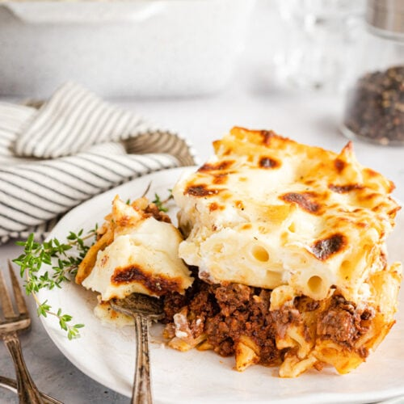

Macaroni Bechamel

Delicious Macaroni Bechamel
This dish is an Egyption favorite! A delicious meal to enjoy with your family!
Ingredients
Pasta
- 1 Box Penne Pasta (16 ounce)
Meat
- 2 pounds Ground Beef
- 1 medium Onion, chopped
- 2 Garlic Cloves, minced
- 1 tsp Cinnamon
- 2 tbsp Fresh Parsley, chopped
- 1 tbsp Fresh Thyme
- 1 Can Tomato Sauce (8 ounce)
- 1 Egg, beaten
- Salt & Black Pepper
Bechamel Sauce
- 3 cups Cold Milk
- 6 tbsp Butter
- 6 tbsp Flour
- 1 tsp Fresh Thyme
- 1/2 tsp Nutmeg (optional)
- 2 Eggs, beaten
- Salt & Black Pepper
Instructions
Pasta
- Prepare pasta according to directions on the box.
Meat
-
Saute the onion in a little oil over med-high heat until soft.
Add garlic and saute another 2 minutes.
-
Add the ground beef and brown.
-
Drain off the fat, return to the stove and add the parsley, thyme,
and cinnamon until combined.
-
Stir in the can of tomato sauce and simmer over low heat about 10 minutes.
-
Remove from the heat and let it cool. Once it has cooled stir in the beaten egg. Set aside.
Bechamel Sauce
-
In a large saucepan over med-high heat melt the butter.
Once melted whisk in the flour until smooth. Keep whisking for 2 minutes.
-
Now whisk in the milk slowly until all the milk has been added.
Keep whisking making sure there are no lumps in it.
Add the salt and white and black peppers to your taste.
-
Whisk pretty continuously until the milk is almost boiling, but not quite.
Now whisk in the thyme and nutmeg (if you want it).
The sauce should now be fairly thick.
-
Quickly whisk in the beaten eggs. Remove from heat.
Assemble
-
Mix half the bechamel mixture into the pasta.
-
Put half the pasta covered with the sauce into a 9x13 baking dish.
-
Now layer the entire meat mixture over the pasta. You can top it with a
sprinkling of Parmesan cheese if you like.
-
Now add the rest of the pasta to form the top layer.
-
Finally, pour and spread the remaining bechamel sauce over the top of the last layer.
-
Bake it in the oven at 400 degrees for 45-60 min or until the top is golden brown.